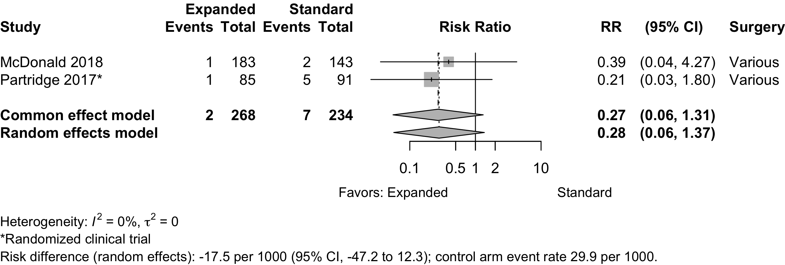
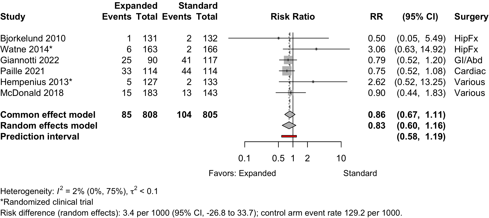

| Outcome | Studies Reporting | |
|---|---|---|
| Before-After | Retrospective Cohort |
|
| Delirium | 1 | 1 |
| Complications | 3 | 1 |
| Length of stay | 2 | 1 |
| Discharge location | 1 | |
| Readmission | 1 | 1 |
| Mortality | 2 | 1 |
Expanded Preoperative Evaluation
Updates
2024-04-10
| Date | Modification |
|---|---|
| 2024-03-28 | • 4 studies (3 before-after [Harari 2007, Smoor 2023, Staiger 2023] 1 retrospective cohort [Paille 2021]) added from updated search. |
| 2024-03-30 | • Correction to link Shyu 2005 and 2008 (same trial). • Added dementia to study characteristics table. • Study and group ordering now consistent study characteristics and evaluation tables. |
| 2024-04-10 | • GRADE for delirium now low based on concern for small study effects and potential for publication bias (see asymmetric funnel plot examining small study effects). • For manuscript balance table, omitted results from non-randomized studies except for delayed neurocognitive recovery and patient satisfaction. However, note that for hospital and 30-day mortality the GRADE was higher for nonrandomized studies. • Updated table of evaluation and intervention components to include discussion of expectations and palliative care discussion, as well as haloperidol for delirium prophylaxis. Replaced changed for clarity. • Added table of intervention frequency. • Physical function pooled removed period subgroups; arranged by time in forest plots and added figures showing limited change over time for RCTs and nonrandomized studies. • Consistent with other TIVA versus inhaled anesthesia, adverse event results were combined (naïvely) from randomized and nonrandomized designs when the GRADE from randomized clinical trials would have been low or very low. • Deleted pooled pulmonary complications owing to inconsistent outcome definitions. • Reorganized discharge location pooled results to show randomized and nonrandomized designs. • Added funnel plots, forest plots of risk differences, and baseline risk vs. risk ratio. • Added sensitivity analysis for pooled odds ratio to forest plot footnote from nonrandomized studies to include the adjusted result from Tarazona-Santabalbina 2019 (little difference from unadjusted). |
| Outcome | RCT | NRSI | GRADE | Effect | Est (CI) | New RCT | New NRSI | Old Est (CI) | GRADE Δ |
|---|---|---|---|---|---|---|---|---|---|
| Delirium incidence | 6 | Low | RR | 0.77 (0.60–0.99) | Yesa | ||||
| 6 | Very low | RR | 0.64 (0.47–0.86) | 2 | 0.65 (0.49–0.87) | No | |||
| Hip fracture | 4 | RR | 0.84 (0.70–0.99) | ||||||
| Other | 2 | RR | 0.54 (0.33–0.89) | ||||||
| Delayed neurocognitive recovery | 1 | Very low | RR | 0.71 (0.36-1.39) | |||||
| Postoperative neurocognitive disorder | none | none | |||||||
| Physical function | 5 | Very low | SMD | 0.09 (-0.16 to 0.31) | 2 | -0.00 (-0.17 to 0.16) | No | ||
| 4 | Very low | SMD | 0.02 (-0.33 to 0.37) | 2 | -0.05 (-0.41 to 0.30) | No | |||
| Complications† | 4 | 9 | Very low | See Below | |||||
| Patient satisfaction | 1 | Very low | RD/100 | 3.3 (-5.3 to 12.0) | |||||
| Length of stay (days) | 8 | Very low | MD | 0.0 (-1.7 to 1.7) | 2 | 0.1 (-1.9 to 2.0) | |||
| 14 | Very low | MD | -1.1 (-2.0 to -0.1) | 3 | -0.9 (-2.1 to 0.3) | No | |||
| Discharge to institution | 4 | Low | RR | 0.98 (0.76-1.27) | |||||
| 6 | Low | RR | 0.82 (0.63–1.07) | 1 | 0.65 (0.43–0.96) | No | |||
| Mortality (in-hospital or 30-day) | 4 | Very low | RR | 1.02 (0.30–3.53) | 1.02 (0.12–8.46)b | ||||
| 5 | RD/1000 | 0.2 (-31.6 to 32.0) | |||||||
| 15 | Low | RR | 0.66 (0.51–0.85) | 2 | 0.67 (0.49–0.91) | No | |||
| 16 | RD/1000 | -7.5 (-14.1 to -0.8) | 3 | ||||||
| Mortality (1-year) | 2 | Very low | RR | 0.78 (0.54–1.10) | |||||
| RD/1000 | -57.2 (-134.7 to 20.3) | ||||||||
| 5 | Very low | RR | 0.77 (0.39–1.52) | 0.77 (0.30–1.64)c | |||||
| RD/1000 | -31.5 (-113.1 to 50.1) | ||||||||
| RCT: randomized controlled trial; NRSI: non-randomized study of intervention; GRADE: Grading of Recommendations Assessment, Development and Evaluation; Est: effect estimate; CI: confidence interval; RR: risk ratio; MD: mean difference; RD: risk difference. | |||||||||
| a Although the number of studies limits the ability to assess small study effects, reviewing funnel plot suggests that possibility. Discussed with task force and decision made to downgrade to low. | |||||||||
| b Error in transcribing confidence interval. | |||||||||
| c Difference in confidence intervals TBD. | |||||||||
| Outcome | RCT | NRSI | GRADE | Effect | Est (CI) | New RCT | New NRSI | Old Est (CI) | GRADE Δ |
|---|---|---|---|---|---|---|---|---|---|
| Myocardial infarction | 1 | 4 | Very low | RR | 0.58 (0.22–1.53) | NA | |||
| RD/1000 | -2.7 (-17.7 to 12.3) | NA | |||||||
| Cardiac arrest | 1 | 1 | Very low | RR | 0.28 (0.06–1.37) | NA | |||
| RD/1000 | 17.5 (-47.2 to 12.3) | NA | |||||||
| Acute kidney injury | 2 | 4 | Very low | RR | 0.83 (0.60–1.16) | 1 | NA | No | |
| RD/1000 | 3.4 (-26.8 to 33.7) | NA | |||||||
| Pneumonia | 2 | 7 | Very low | RR | 0.82 (0.51–1.32) | 1 | NA | No | |
| RD/1000 | -2.8 (-20.4 to 14.8) | NA | |||||||
| Respiratory failure | 1 | Very low | RD/1000 | -5.9% (-13.0 to 1.2) | |||||
| Pulmonary embolism | 4 | Very low | RR | 0.90 (0.26–3.08) | 1 | 1.21 (0.32–4.67) | No | ||
| RD/1000 | 1.2 (-14.6 to 16.9) | ||||||||
| RCT: randomized controlled trial; NRSI: non-randomized study of intervention; GRADE: Grading of Recommendations Assessment, Development and Evaluation; Est: effect estimate; CI: confidence interval; RR: risk ratio; RD: risk difference. | |||||||||
Key Question
Among older patients anticipating surgery and anesthesia, does expanded preoperative evaluation (e.g., for frailty, cognitive impairment, functional status, or psychosocial issues) lead to improved postoperative outcomes?
Balance Tables
| Preoperative Evaluation | |||||||
|---|---|---|---|---|---|---|---|
| Outcome | RCT | NRSI | Expanded | Standard | GRADE* | Effect | Estimate (95% CI) |
| N (Total) | N (Total) | ||||||
| Delirium incidence | 6 | 189 (662) | 253 (703) | ⨁⨁◯◯ |
RR | 0.77 (0.60–0.99) | |
| 6 | 135 (1126) | 176 (984) | ⨁◯◯◯ |
RR | 0.64 (0.47–0.86) | ||
| Hip fracture | 4 | 168 (450) | 212 (479) | RR | 0.84 (0.70–0.99) | ||
| Other | 2 | 21 (212) | 41 (224) | RR | 0.54 (0.33–0.89) | ||
| Delayed neurocognitive recovery | 1 | 13 (96) | 16 (84) | ⨁◯◯◯ |
RR | 0.71 (0.36-1.39) | |
| Postoperative neurocognitive disorder | none | none | |||||
| Physical function | 5 | (563) | (576) | ⨁◯◯◯ |
SMD | 0.09 (-0.16 to 0.31) | |
| 4 | (407) | (370) | ⨁◯◯◯ |
SMD | 0.02 (-0.33 to 0.37) | ||
| Complications† | 4 | 9 | ⨁◯◯◯ |
See below | |||
| Patient satisfaction | 1 | 32 (32) | 29 (30) | ⨁◯◯◯ |
RD/100 | 3.3 (-5.3 to 12.0)‡ | |
| Length of stay (days) | 8 | (968) | (1001) | ⨁◯◯◯ |
MD | 0.0 (-1.7 to 1.7) | |
| 14 | (1972) | (1889) | ⨁◯◯◯ |
MD | -1.1 (-2.0 to -0.1) | ||
| Discharge to institution | 4 | 252 (419) | 271 (424) | ⨁⨁◯◯ |
RR | 0.98 (0.76-1.27) | |
| 6 | 345 (855) | 336 (668) | ⨁⨁◯◯ |
RR | 0.82 (0.63–1.07) | ||
| Mortality (in-hospital or 30-day) | 4 | 19 (498) | 19 (526) | ⨁◯◯◯ |
RR | 1.02 (0.30–3.53) | |
| 5 | 19 (561) | 19 (589) | RD/1000 | 0.2 (-31.6 to 32.0) | |||
| 15 | 110 (5746) | 205 (7177) | ⨁⨁◯◯ |
RR | 0.66 (0.51–0.85) | ||
| 16 | 110 (5846) | 205 (7202) | RD/1000 | -7.5 (-14.1 to -0.8) | |||
| Mortality (1-year) | 2 | 42 (215) | 57 (226) | ⨁◯◯◯ |
RR | 0.78 (0.54–1.10) | |
| RD/1000 | -57.2 (-134.7 to 20.3) | ||||||
| 5 | 220 (3310) | 479 (5722) | ⨁◯◯◯ |
RR | 0.77 (0.39–1.52) | ||
| RD/1000 | -31.5 (-113.1 to 50.1) | ||||||
| RCT: randomized clinical trial; NRSI: nonrandomized studies of interventions (non-randomized trial, before-after and cohort studies); GRADE: Grades of Recommendation, Assessment, Development, and Evaluation; RR: risk ratio; MD: mean difference. | |||||||
| * Very low: ⨁◯◯◯; Low: ⨁⨁◯◯; Moderate: ⨁⨁⨁◯; High: ⨁⨁⨁⨁. | |||||||
| † Cardiovascular, pulmonary, and renal. | |||||||
| ‡ High versus lower satisfaction. | |||||||
| Preoperative Evaluation | |||||||
|---|---|---|---|---|---|---|---|
| Outcome | RCT | NRSI | Expanded | Standard | GRADE* | Effect | Estimate (95% CI) |
| N (Total) | N (Total) | ||||||
| Myocardial infarction | 1 | 4 | 9 (811) | 12 (714) | ⨁◯◯◯ |
RR | 0.58 (0.22–1.53) |
| RD/1000 | -2.7 (-17.7 to 12.3) | ||||||
| Cardiac arrest | 1 | 1 | 2 (268) | 7 (234) | ⨁◯◯◯ |
RR | 0.28 (0.06–1.37) |
| RD/1000 | 17.5 (-47.2 to 12.3) | ||||||
| Acute kidney injury | 2 | 4 | 85 (808) | 104 (805) | ⨁◯◯◯ |
RR | 0.83 (0.60–1.16) |
| RD/1000 | 3.4 (-26.8 to 33.7) | ||||||
| Pneumonia | 2 | 7 | 78 (1261) | 94 (1198) | ⨁◯◯◯ |
RR | 0.82 (0.51–1.32) |
| RD/1000 | -2.8 (-20.4 to 14.8) | ||||||
| Respiratory failure | 1 | 16 (183) | 21 (143) | ⨁◯◯◯ |
RD/1000 | -5.9% (-13.0 to 1.2) | |
| Pulmonary embolism | 4 | 6 (468) | 5 (354) | ⨁◯◯◯ |
RR | 0.90 (0.26–3.08) | |
| RD/1000 | 1.2 (-14.6 to 16.9) | ||||||
| RCT: randomized clinical trial; GRADE: Grades of Recommendation, Assessment, Development, and Evaluation; RR: risk ratio; RD: risk difference. | |||||||
| * Very low: ⨁◯◯◯; Low: ⨁⨁◯◯; Moderate: ⨁⨁⨁◯; High: ⨁⨁⨁⨁. | |||||||
Outcome Importance Rankings
Expanded Preoperative Evaluation
Table 1. Rankings of the 5 most important outcomes (11 respondents).
Outcomes Reported
Table 2. Publications reporting dichotomous or count outcomes (not unique studies).
| Outcome | RCT, N = 11 | NR Trial, N = 1 | Quasi-exp, N = 18 | Prosp Coh, N = 1 | Retro Coh, N = 2 |
|---|---|---|---|---|---|
| ADL | 1 (9.1%) | — | — | — | — |
| Complications | 5 (45%) | — | 12 (67%) | 1 (100%) | 2 (100%) |
| DNCR/PND | — | — | 1 (5.6%) | — | — |
| Delirium | 6 (55%) | — | 7 (39%) | — | 2 (100%) |
| Delirium duration | — | — | — | — | — |
| Discharge location | 4 (36%) | 1 (100%) | 4 (22%) | — | 1 (50%) |
| Mortality | 7 (64%) | 1 (100%) | 12 (67%) | 1 (100%) | 2 (100%) |
| Opioid use | — | — | — | — | — |
| Pain | 1 (9.1%) | — | 1 (5.6%) | — | — |
| QoR | — | — | — | — | — |
| Readmission | 5 (45%) | — | 8 (44%) | — | 2 (100%) |
| Satisfaction | — | — | 1 (5.6%) | — | — |
| ADL: activities of daily living; NCR: neurocognitive recovery; POCD: postoperative neurocognitive disorder; QoR: quality of recovery; RCT: randomized clinical trial; NR Trial: non-randomized trial; Quasi-exp: before-after or time series; Prosp Coh: prospective cohort; Retro Coh: retrospective cohort. | |||||
Table 3. Publications reporting continuous outcomes (not unique studies).
| Outcome | RCT, N = 11 | NR Trial, N = 1 | Quasi-exp, N = 18 | Prosp Coh, N = 1 | Retro Coh, N = 2 |
|---|---|---|---|---|---|
| Delirium duration | 2 (18%) | — | — | — | — |
| Length of stay | 10 (91%) | 1 (100%) | 11 (61%) | 1 (100%) | 2 (100%) |
| Opioid use | — | — | — | — | — |
| RCT: randomized clinical trial; NR Trial: non-randomized trial; Quasi-exp: before-after or time series; Prosp Coh: prospective cohort; Retro Coh: retrospective cohort. | |||||
Table 4. Publications reporting likert or ordinal outcomes (not unique studies).
| Outcome | RCT, N = 11 | NR Trial, N = 1 | Quasi-exp, N = 18 | Prosp Coh, N = 1 | Retro Coh, N = 2 |
|---|---|---|---|---|---|
| ADL | 6 (55%) | 1 (100%) | 3 (17%) | — | — |
| DNCR/PND | 3 (27%) | — | — | — | — |
| Delirium | 1 (9.1%) | — | — | — | — |
| Complications | — | — | — | — | — |
| Pain | — | — | — | — | — |
| Quality of life | 1 (9.1%) | — | 2 (11%) | — | — |
| QoR | — | — | — | — | — |
| Satisfaction | — | — | — | — | — |
| ADL: activities of daily living; NCR: neurocognitive recovery; POCD: postoperative neurocognitive disorder; QoR: quality of recovery; RCT: randomized clinical trial; NR Trial: non-randomized trial; Quasi-exp: before-after or time series; Prosp Coh: prospective cohort; Retro Coh: retrospective cohort. | |||||
Included Studies
See Appendix for detailed summary study and patient characteristics including primary outcomes.
Table 5. Number of studies by design.
| Design | Studies |
|---|---|
| Randomized Clinical Trial | 9 |
| Nonrandomized Trial | 1 |
| Before-After/Time Series | 18 |
| Prospective Cohort | 1 |
| Retrospective Cohort | 2 |
| Total | 31 |
| Studies with multiple publications counted once (applies to 2 studies with 2 publications). | |
Design, centers, country, and surgery
Table 6. Study design, enrollment, centers, country, and surgery (see References for citations).
| ID | Study | Centers | Enrolled | Countrya | Surgery |
|---|---|---|---|---|---|
| Randomized Clinical Trial | |||||
| 741 | 1 | 126 | USA | HipFx | |
| 16608 | 1 | 397 | Norway | HipFx | |
| 17156 | 1 | 159 | Taiwana | HipFx | |
| 17155 | 1 | 162 | Taiwana | HipFx | |
| 16628 | 1 | 321 | Spain | HipFx | |
| 1201 | 1 | 329 | Norway | HipFx | |
| 16739 | 1 | 155 | Chinaa | HipFx | |
| 555 | 2 | 122 | Norway | GI/Abd | |
| 760 | 3 | 297 | Netherlands | Variousb | |
| 1263 | 3 | 297 | Netherlands | Variousb | |
| 16605 | 1 | 201 | UK | Variousb | |
| Nonrandomized Trial | |||||
| 17087 | 1 | 171 | Belgium | HipFx | |
| Before-After/Time Series | |||||
| 16544 | 1 | 276 | Sweden | HipFx | |
| 16629 | 1 | 1056 | Netherlands | HipFx | |
| 19171 | 1 | 108 | UK | Other Ortho | |
| 16601 | 2 | 266 | Sweden | Other Ortho | |
| 13133 | 1 | 181 | Italy | Other Ortho | |
| 16846 | 1 | 207 | Italy | GI/Abd | |
| 149 | 1 | 443 | Netherlands | GI/Abd | |
| 6017 | 1 | 149 | Netherlands | GI/Abd | |
| 18807 | 1 | 83 | Switzerland | GI/Abd | |
| 18797 | 1 | 281 | Netherlands | Cardiac | |
| 16539 | 1 | 241 | Netherlands | Variousb | |
| 2736 | 1 | 310 | USA | Variousb | |
| 1313 | 1 | 9153 | USA | Variousb | |
| 11264 | 1 | 492 | USA | Variousb | |
| 16591 | 1 | 326 | USA | Variousb | |
| 1294 | 1 | 62 | USA | Variousb | |
| 2108 | 1 | 242 | UK | Urol | |
| 1189 | 1 | 125 | USA | Neuro | |
| Prospective Cohort | |||||
| 17128 | 1 | 466 | USA | Variousb | |
| Retrospective Cohort | |||||
| 16623 | 1 | 310 | Spain | GI/Abd | |
| 19377 | 1 | 228 | France | Cardiac | |
| GI: gastrointestinal; Ortho: orthopedic; Neuro: neurological; Oralmax: oral maxillofacial; Vasc: vascular. | |||||
| a Non very-high Human Development Index country. | |||||
| b Described as various or more than 4 different types of surgery. | |||||
Country Summary
Table 7. Summary of studies by country where conducted.
| N = 31a | |
|---|---|
| Country | |
| USA | 8 (26%)b |
| Netherlands | 6 (19%)b |
| Norway | 3 (9.7%) |
| UK | 3 (9.7%) |
| Italy | 2 (6.5%) |
| Spain | 2 (6.5%) |
| Sweden | 2 (6.5%) |
| Belgium | 1 (3.2%) |
| China | 1 (3.2%) |
| France | 1 (3.2%) |
| Switzerland | 1 (3.2%) |
| Taiwan | 1 (3.2%) |
| a n (%) | |
| b Studies with multiple publications counted once (applies to 2 studies with 2 publications). | |
Comparators
Study Characteristics
Table 8. Selected characteristic of included studies.
| Study | N | Arm | ASA PSa | Dementia N (%)b |
design_f_abbrev | Agec | MMSEc |
|---|---|---|---|---|---|---|---|
| HipFx — Randomized Clinical Trial | |||||||
| 64 | Std | NR | RCT | 80.0 (8.0) |
|||
| 62 | Exp | RCT | 78.0 (8.0) |
||||
| 69 | Std | NR | 0 (0) | RCT | 77.7 (7.1) |
||
| 68 | Exp | 0 (0) | RCT | 77.6 (8.3) |
|||
| 164 | Std | NR | 39 (23.8) | RCT | 82.6 (7.4) |
||
| 155 | Exp | 39 (25.2) | RCT | 81.1 (7.8) |
|||
| 82 | Std | NR | 0 (0) | RCT | 78.9 (7.3) |
||
| 80 | Exp | 0 (0) | RCT | 77.4 (8.2) |
|||
| 166 | Std | NR | 82 (49.4) | RCT | 85.0 {46-101} |
||
| 163 | Exp | 80 (49.1) | RCT | 84.0 {55-99} |
|||
| 199 | Std | NR | 26 (13.1) | RCT | 83.2 (6.4) |
||
| 198 | Exp | 27 (13.6) | RCT | 83.4 (5.4) |
|||
| 85 | Std | 1234 | RCT | 81.8 |
|||
| 70 | Exp | RCT | 79.5 |
||||
| GI/Abd — Randomized Clinical Trial | |||||||
| 63 | Std | NR | 6 (9.5) | RCT | 78.8 (7.8) |
||
| 53 | Exp | 3 (5.7) | RCT | 78.2 (7.4) |
|||
| Various — Randomized Clinical Trial | |||||||
| 149 | Std | NR | RCT | 77.6 (7.7) |
26.3 (3.9) | ||
| 148 | Exp | RCT | 77.5 (6.7) |
26.7 (3.0) | |||
| 133 | Std | NR | RCT | 77.4 (7.7) |
|||
| 127 | Exp | RCT | 77.4 (6.9) |
||||
| 105 | Std | NR | 5 (4.8) | RCT | 75.5 (6.3) |
||
| 104 | Exp | 2 (1.9) | RCT | 75.5 (6.6) |
|||
| HipFx — Nonrandomized Trial | |||||||
| 77 | Std | NR | 18 (23.4) | NR Trial | 81.1 (7.2) |
7.2 (3.9) | |
| 94 | Exp | 16 (17.0) | NR Trial | 80.4 (7.0) |
7.3 (3.9) | ||
| HipFx — Before-After/Time Series | |||||||
| 132 | Std | 1234 | 0 (0) | Quasi-exp | 82.0 (7.6) |
||
| 131 | Exp | 0 (0) | Quasi-exp | 81.1 (7.5) |
|||
| Std | NR | Quasi-exp | 82.9 |
||||
| 378 | Exp | Quasi-exp | 83.7 |
||||
| GI/Abd — Before-After/Time Series | |||||||
| 222 | Std | NR | 22 (9.9) | Quasi-exp | 77.0 {73-81} |
||
| 221 | Exp | 27 (12.2) | Quasi-exp | 77.0 {74-82} |
|||
| 63 | Std | 1234 | Quasi-exp | 81.4 {74-89} |
|||
| 86 | Exp | Quasi-exp | 80.6 {74-87} |
||||
| 117 | Std | NR | Quasi-exp | 82.0 {78-85} |
28 {26-29} | ||
| 90 | Exp | Quasi-exp | 79.0 {76-83} |
27 {25-29} | |||
| 54 | Std | NR | Quasi-exp | 75.0 {70-81} |
|||
| 18 | Exp | Quasi-exp | 80.0 {72-83} |
||||
| Cardiac — Before-After/Time Series | |||||||
| 183 | Std | NR | 29 (15.8) | Quasi-exp | 76.0 {73-78} |
||
| 183 | Exp | 32 (17.5) | Quasi-exp | 77.0 {73-80} |
|||
| Neuro — Before-After/Time Series | |||||||
| 25 | Std | NR | Quasi-exp | 73.0 (4.9) |
|||
| 100 | Exp | Quasi-exp | 73.6 (6.0) |
||||
| Urol — Before-After/Time Series | |||||||
| 101 | Std | NR | Quasi-exp | ||||
| 124 | Exp | Quasi-exp | |||||
| Other Ortho — Before-After/Time Series | |||||||
| 54 | Std | NR | Quasi-exp | 75.0 (6.1) |
|||
| 54 | Exp | Quasi-exp | 74.1 (6.2) |
||||
| 138 | Std | 123 | Quasi-exp | 66.0 (13.9) |
|||
| 128 | Exp | Quasi-exp | 68.0 (12.0) |
||||
| 59 | Std | 123 | Quasi-exp | 73.0 {68-77} |
|||
| 122 | Exp | Quasi-exp | 70.0 {64-77} |
||||
| Various — Before-After/Time Series | |||||||
| 30 | Std | 123 | Quasi-exp | 72.6 (8.3) |
|||
| 32 | Exp | Quasi-exp | 70.9 (6.3) |
||||
| 120 | Std | NR | Quasi-exp | 76.5 (4.9) |
26.6 (3.7) | ||
| 121 | Exp | Quasi-exp | 76.0 (5.1) |
27.3 (2.6) | |||
| 160 | Std | NR | Quasi-exp | 68.3 (11.2) |
|||
| 150 | Exp | Quasi-exp | 71.3 (10.6) |
||||
| 5275 | Std | 1234 | Quasi-exp | 60.3 (13.4) |
|||
| 3878 | Exp | Quasi-exp | 60.3 (13.7) |
||||
| 143 | Std | NR | Quasi-exp | 71.9 (6.4) |
|||
| 183 | Exp | Quasi-exp | 75.6 (6.8) |
||||
| 250 | Std | NR | Quasi-exp | 82.7 {78-87} |
|||
| 242 | Exp | Quasi-exp | 81.1 {78-86} |
||||
| GI/Abd — Retrospective Cohort | |||||||
| 107 | Std | 1234 | 4 (3.7) | Retro Coh | 75.3 (5.1) |
||
| 203 | Exp | 27 (13.3) | Retro Coh | 77.5 (4.8) |
|||
| Cardiac — Retrospective Cohort | |||||||
| 114 | Std | NR | Retro Coh | 81.0 {77-83} |
|||
| 114 | Exp | Retro Coh | 80.0 {79-82} |
||||
| Various — Prospective Cohort | |||||||
| 308 | Std | 234 | Prosp Coh | 80.0 (5.0) |
|||
| 158 | Exp | Prosp Coh | 80.0 (5.0) |
||||
| Exp: expanded preoperative evaluation; Std: standard preoperative evaluation; NR: not reported. | |||||||
| a ASA Physical Status. | |||||||
| b Blank if no information provided. | |||||||
| c Mean Med (SD)[Range]{IQR}. | |||||||
Evaluation/Intervention Components
Table 9. Components of expanded preoperative evaluation and interventions prompted.
| Assessments | Interventions | ||||||||||||||||||||||
|---|---|---|---|---|---|---|---|---|---|---|---|---|---|---|---|---|---|---|---|---|---|---|---|
| Study | General | Targeted | Patient Education | Staff | |||||||||||||||||||
| HipFx — Randomized Clinical Trial | |||||||||||||||||||||||
◐a |
◐ |
◐ |
◐ |
◐ |
◐ |
◐ |
◐ |
◐ |
◐ |
◐ |
◐ |
● |
◐ |
◐ |
◐ |
● | |||||||
◐a |
◐ |
◐ |
◐ |
◐ |
◐ |
◐ |
◐ |
◑ |
◐ |
◐ |
◐ |
||||||||||||
◐a |
◐ |
◐ |
◐ |
◐ |
◐ |
◐ |
◐ |
◐ |
◐ |
◐ |
◐ |
||||||||||||
◐a |
◐ |
◐ |
◐ |
◐ |
◐ |
◐ |
◐ |
◐ |
● |
◐ |
◐ |
◐ |
◐ |
◐ |
|||||||||
◐a |
◐ |
◐ |
◐ |
◐ |
◐ |
◐ |
◐ |
◐ |
◐ |
◐ |
◐ |
◐ |
◐ |
||||||||||
◐a |
◐ |
◐ |
◐ |
◐ |
◐ |
◐ |
◐ |
◐ |
◐ |
◐ |
◐ |
◐ |
◐ |
||||||||||
| GI/Abd — Randomized Clinical Trial | |||||||||||||||||||||||
| x | ◐a |
◐ |
◐ |
◐ |
● |
◐ |
◐ |
◐ |
◐ |
◐ |
◐ |
◐ |
◐ |
◐ |
◐ |
◐ |
|||||||
| Various — Randomized Clinical Trial | |||||||||||||||||||||||
◐a |
◐ |
◐ |
◐ |
● |
◐ |
◐ |
◐ |
◐ |
◐ |
◐ |
|||||||||||||
◐a |
◐ |
● |
◐ |
◐ |
◐ |
◐ |
◐ |
◐ |
◐ |
◐ |
|||||||||||||
| HipFx — Nonrandomized Trial | |||||||||||||||||||||||
◐a |
◐ |
◐ |
◐ |
◐ |
● |
● |
● |
◐ |
◐ |
◐ |
◐ |
||||||||||||
| HipFx — Before-After/Time Series | |||||||||||||||||||||||
◐ |
◐ |
◐ |
◐ |
◐ |
● | ||||||||||||||||||
◐ |
◐ |
● | |||||||||||||||||||||
| GI/Abd — Before-After/Time Series | |||||||||||||||||||||||
◐ |
◐ |
◐ |
◐ |
◐ |
◐ |
◐ |
|||||||||||||||||
| x | ◐ |
● |
● |
● |
● |
◐ |
◐ |
◐ |
◐ |
◐ |
◐ |
◐ |
|||||||||||
| x | ● a,b |
◐ |
◐ |
◐ |
◐ |
◐ |
◐ |
◐ |
◐ |
◐ |
◐ |
◐ |
● |
||||||||||
◐ |
◐ |
◐ |
◐ |
◐ |
◐ |
||||||||||||||||||
| Cardiac — Before-After/Time Series | |||||||||||||||||||||||
● |
● |
● |
● |
● |
● |
◐ |
◐ |
◐ |
◐ |
◐ |
◐ |
◐ |
|||||||||||
| Neuro — Before-After/Time Series | |||||||||||||||||||||||
◐ |
◐ |
◐ |
◐ |
◐ |
|||||||||||||||||||
| Urol — Before-After/Time Series | |||||||||||||||||||||||
◐a |
◐ |
◐ |
◐ |
◐ |
◐ |
◐ |
◐ |
◐ |
◐ |
||||||||||||||
| Other Ortho — Before-After/Time Series | |||||||||||||||||||||||
◐a |
◐ |
◐ |
◐ |
◐ |
◐ |
◐ |
◐ |
◐ |
◐ |
||||||||||||||
◐ |
◐ |
◐ |
● |
◐ |
◐ |
◐ |
|||||||||||||||||
| x | ◐ |
● |
◐ |
◐ |
◐ |
◐ |
◐ |
◐ |
◐ |
◐ |
|||||||||||||
| Various — Before-After/Time Series | |||||||||||||||||||||||
◑ |
◐ |
◐ |
● |
● |
◐ |
||||||||||||||||||
◐a |
◐ |
◐ |
◐ |
◐ |
◐ |
◐ |
◐ |
◐ |
◐ |
◐ |
◐ |
◐ |
◐ |
◐ |
|||||||||
◐ |
◐ |
◐ |
◐ |
◐ |
|||||||||||||||||||
◐ |
◐ |
◐ |
◐ |
◐ |
◐ |
||||||||||||||||||
| x | ◐ |
◐ |
◐ |
◐ |
◐ |
◐ |
◐ |
◐ |
◐ |
◐ |
◐ |
◐ |
◐ |
◐ |
|||||||||
◐ |
◐ |
◐ |
◐ |
◐ |
◐ |
◐ |
◐ |
◐ |
◐ |
◐ |
|||||||||||||
| GI/Abd — Retrospective Cohort | |||||||||||||||||||||||
◐a |
◐ |
◐ |
◐ |
◐ |
◐ |
◐ |
◐ |
◐ |
◐ |
◐ |
● |
◐ |
◐ |
● | |||||||||
| Cardiac — Retrospective Cohort | |||||||||||||||||||||||
◐a |
◐ |
◐ |
◐ |
◐ |
◐ |
◐ |
◐ |
◐ |
◐ |
||||||||||||||
| Various — Prospective Cohort | |||||||||||||||||||||||
◐ |
◐ |
◐ |
◐ |
◐ |
◐ |
◐ |
◐ |
||||||||||||||||
| ERAS: enhanced recovery after surgery; CGA: comprehensive geriatric assessment; GI: gastrointestinal; Abd: abdominal; Suppl: supplement; ◐ expanded evaluation only; ● in expanded and standard evaluation arms; ◑ in standard evaluation arms only. | |||||||||||||||||||||||
| a When a comprehensive geriatric assessment (CGA) was conducted, all components were presumed included. | |||||||||||||||||||||||
| b Selective comprehensive geriatric assessment in standard arm. | |||||||||||||||||||||||
Intervention Frequency
| Patient interventions | |
| Intervention | N = 31a |
|---|---|
| Physical activity | 16 (52%) |
| Nutrition | 14 (45%) |
| Social Ties | 10 (32%) |
| Surgery/recovery expectations | 6 (19%) |
| Procedure | 2 (6.5%) |
| Palliative care discussion | 2 (6.5%) |
| a n (%) | |
| Staff interventions | |
| Intervention | N = 31a |
|---|---|
| Multidisciplinary | 26 (84%) |
| Treatment Plan | 24 (77%) |
| Geriatric Visits | 11 (35%) |
| Medication Review/Deprescribing | 13 (42%) |
| Nutritional Supplement | 9 (29%) |
| Rx/comorbidities | 8 (26%) |
| Active Delirium Screen | 4 (13%) |
| Haloperidol Prophylaxis | 3 (9.7%) |
| a n (%) | |
Delirium Incidence
Table 11. Delirium incidence with expanded versus standard preoperative evaluation.
| Study | N | Arm | Dementia N (%) |
Scale | Day(s)a | Surgery | Incidence Proportion | RR (95% CI) | |
|---|---|---|---|---|---|---|---|---|---|
| N (%) | 0 – 100% | ||||||||
| Randomized Clinical Trial | |||||||||
| 64 | Std | CAM | Stay | HipFx | 32 (50.0) | — | |||
| 62 | Exp | 20 (32.3) | 0.65 (0.42-1.00) | ||||||
| 164 | Std | 39 (23.8) | CAM | Stay | HipFx | 67 (40.9) | — | ||
| 155 | Exp | 39 (25.2) | 53 (34.2) | 0.84 (0.63-1.11) | |||||
| 166 | Std | 82 (49.4) | CAM | 10 | HipFx | 86 (51.8) | — | ||
| 163 | Exp | 80 (49.1) | 80 (49.1) | 0.95 (0.76-1.17) | |||||
| 85 | Std | DSM | Stay | HipFx | 27 (31.8) | — | |||
| 70 | Exp | 15 (21.4) | 0.67 (0.39-1.16) | ||||||
| 133 | Std | DOS/DSM | 10 | Various | 19 (14.3) | — | |||
| 127 | Exp | 12 (9.4) | 0.66 (0.33-1.31) | ||||||
| 91 | Std | 5 (4.8) | unspecified | Stay | Various | 22 (24.2) | — | ||
| 85 | Exp | 2 (1.9) | 9 (10.6) | 0.44 (0.21-0.90) | |||||
| Before-After/Time Series | |||||||||
| 132 | Std | 0 (0) | DSM/other | Stay | HipFx | 45 (34.1) | — | ||
| 131 | Exp | 0 (0) | 29 (22.1) | 0.65 (0.44-0.97) | |||||
| b | Stdc | DSM | Stay | HipFx | (29.0) | — | |||
| b | Stdd | (23.9) | — | ||||||
| b | Stde | (27.8) | — | ||||||
| 378 | Exp | 102 (27.0) | — | ||||||
| 54 | Std | unspecified | Stay | Other Ortho | 10 (18.5) | — | |||
| 54 | Exp | 3 (5.6) | 0.30 (0.09-1.03) | ||||||
| 222 | Std | 22 (9.9) | DOS/other | Stay | GI/Abd | 27 (12.2) | — | ||
| 221 | Exp | 27 (12.2) | 22 (10.0) | 0.82 (0.48-1.39) | |||||
| 120 | Std | CAM | 30 | Various | 16 (13.3) | — | |||
| 121 | Exp | 15 (12.4) | 0.93 (0.48-1.79) | ||||||
| 210 | Std | CAM | Stay | Various | 25 (11.9) | — | |||
| 182 | Exp | 12 (6.6) | 0.55 (0.29-1.07) | ||||||
| 25 | Std | unspecified | Stay | Neuro | 4 (16.0) | — | |||
| 100 | Exp | 18 (18.0) | 1.12 (0.42-3.03) | ||||||
| Retrospective Cohort | |||||||||
| 107 | Std | 4 (3.7) | CAM | Stay | GI/Abd | 31 (29.0) | — | ||
| 203 | Exp | 27 (13.3) | 23 (11.3) | 0.39 (0.24-0.64) | |||||
| 114 | Std | unspecified | Stay | Cardiac | 18 (15.8) | — | |||
| 114 | Exp | 13 (11.4) | 0.72 (0.37-1.40) | ||||||
| RR: risk ratio; CAM: Confusion Assessment Method; DI: Delirium Index; DRS: Delirium Rating Scale; DOS: delirium observation screening; DSM: Diagnostic and Statistical Manual of Mental Disorders; NR: not reported; HipFx: hip fracture; GI/Abd: gastrointestinal or abdominal. | |||||||||
| a Day(s) over which incidence proportion assessed. Stay indicates duration of hospitalization. | |||||||||
| b N = 611 for the 3 years of standard evaluation (2005-2007); outcomes reported by year separately. | |||||||||
| c 2005. | |||||||||
| d 2006. | |||||||||
| e 2007. | |||||||||
Pooled
Randomized
Figure 1. Delirium incidence following expanded compared with standard preoperative evaluation in randomized clinical trials.
Risk of bias ratings: low +, some concerns ?, high – .
Too few studies to adequately examine small study effects, but funnel suggests potential exists.


Nonrandomized
Figure 6. Delirium incidence following expanded compared with standard preoperative evaluation in nonrandomized studies.

Risk of bias ratings: low ++, moderate +, serious -, critical - - ; NI: no information.
Including Vochteloo 2011 assuming effectively equal numbers of participants studied each year, obtained RR 0.70 (95% CI, 0.53-0.95; PI, 0.35–1.42).
Pooling odds ratios using the adjusted result from Tarazona-Santabalbina 2019 yielded an OR 0.58 (95% CI, 0.39–0.88) versus using including the unadjusted data OR 0.58 (95%, 0.40–0.84).


Risk of bias ratings: low ++, moderate +, serious -, critical - - ; NI: no information.


Delayed Neurocognitive Recovery
Table 12. Delayed neurocognitive recovery incidence and ascertainment (expanded versus standard preoperative evaluation; randomized and nonrandomized designs).
| Study | N | Drug | Preop | Instrument | Delayed Neurocognitive Recovery | |||||
|---|---|---|---|---|---|---|---|---|---|---|
| MMSE | MMSE | DST | MoCA | Other | N (%) | 0 — 100% | RR (95% CI) | |||
| Before-After/Time Series — Various Procedures | ||||||||||
| 84 | Std | 26.6 (3.7) |
✓ |
16 (19.0) | — | |||||
| 96 | Exp | 27.3 (2.6) |
13 (13.5) | 0.71 (0.36-1.39) | ||||||
| Mini-Mental State Exam; DST: Digit Span Test; MoCA: Montreal Cognitive Assessment; RR: risk ratio. | ||||||||||
Postoperative Neurocognitive Disorder
Physical Function
Table 13. Physical functional status for expanded versus standard preoperative evaluation (randomized* and nonrandomized designs).
| Study | N | Arm | Agea | Scale | Range | Days | Ratinga | SMD (95% CI) | Surgery |
|---|---|---|---|---|---|---|---|---|---|
| <30 days | |||||||||
| 77 | Std | 81.1 (7.2) |
Katz Index | 0→18 | 8 | 12.9 (2.5) |
HipFx | ||
| 94 | Exp | 80.4 (7.0) |
12.0 (2.7) |
-0.34 (-0.65 to -0.04) | |||||
| 85 | Std | 81.8 |
Barthel Index | 0→100 | 21 | 51.7 |
HipFx | ||
| 70 | Exp | 79.5 |
50.5 |
-0.10 (-0.42 to 0.22) | |||||
| 80 | Std | 76.5 (4.9) |
GARS | 44→11 | 8 | b | Various | ||
| 98 | Exp | 76.0 (5.1) |
b | 0.29 (-0.01 to 0.59)c | |||||
| 133 | Std | 77.4 (7.7) |
SF-36 physical | 0→100 | 10 | 49.3 (7.0) |
Various | ||
| 127 | Exp | 77.4 (6.9) |
48.4 (9.1) |
-0.12 (-0.36 to 0.13) | |||||
| 30-90 days | |||||||||
| 169 | Std | 83.2 (6.4) |
Barthel Index | 0→20 | 30 | 14.2 (3.8) |
HipFx | ||
| 179 | Exp | 83.4 (5.4) |
14.5 (3.7) |
0.08 (-0.13 to 0.29) | |||||
| 69 | Std | 77.7 (7.1) |
SF-36 physical | 0→100 | 30 | 18.8 (21.2) |
HipFx | ||
| 68 | Exp | 77.6 (8.3) |
23.3 (20.4) |
0.22 (-0.12 to 0.55) | |||||
| 69 | Std | 77.7 (7.1) |
SF-36 physical | 0→100 | 90 | 28.2 (27.2) |
HipFx | ||
| 68 | Exp | 77.6 (8.3) |
48.4 (30.4) |
0.69 (0.35 to 1.04) | |||||
| 62 | Std | 76.5 (4.9) |
GARS | 44→11 | 90 | b | Various | ||
| 81 | Exp | 76.0 (5.1) |
b | -0.36 (-0.69 to -0.03)c | |||||
| 30 | Std | 72.6 (8.3) |
SF-36 physical | 0→100 | 42 | 37.6 (7.5) |
Various | ||
| 32 | Exp | 70.9 (6.3) |
39.0 (8.3) |
0.17 (-0.32 to 0.67) | |||||
| >90 days | |||||||||
| 183 | Std | 76.0 {73-78} |
SF-12 physical | 0→100 | 120 | 34 [0-43] |
Cardiac | ||
| 183 | Exp | 77.0 {73-80} |
36 [32-38] |
0.61 (0.40 to 0.82) | |||||
| 165 | Std | 83.2 (6.4) |
Barthel Index | 0→20 | 120 | 15.3 (3.7) |
HipFx | ||
| 168 | Exp | 83.4 (5.4) |
16.3 (3.7) |
0.27 (0.05 to 0.49) | |||||
| 120 | Std | 85.0 {46-101} |
Barthel Index | 0→20 | 120 | 16 [12-20] |
HipFx | ||
| 119 | Exp | 84.0 {55-99} |
17 [10-20] |
-0.09 (-0.34 to 0.16) | |||||
| 93 | Std | 85.0 {46-101} |
Barthel Index | 0→20 | 365 | 16 [11-19] |
HipFx | ||
| 97 | Exp | 84.0 {55-99} |
17 [10-19] |
-0.06 (-0.34 to 0.23) | |||||
| 30 | Std | 72.6 (8.3) |
SF-36 physical | 0→100 | 180 | 49.2 (10.4) |
Various | ||
| 32 | Exp | 70.9 (6.3) |
45.3 (10.9) |
-0.36 (-0.86 to 0.14) | |||||
| SMD: standardized mean difference; GARS: Groningen Activity Restriction Scale. | |||||||||
| * Randomized clinical trial. | |||||||||
| a Mean Med (SD)[Range]{IQR}. | |||||||||
| b Study reported only difference scores. | |||||||||
| c For scale reverse to be consistent with other studies. | |||||||||
Pooled
Randomized
Figure 11. Pooled results for physical functional status for expanded versus standard preoperative evaluation from randomized clinical trials (higher is better).

Nonrandomized
Figure 13. Pooled results for physical functional status for expanded versus standard preoperative evaluation from nonrandomized studies (higher is better).

Complications
Table 14. Reported complications in expanded versus standard preoperative evaluation — cardiac, pulmonary, and acute kidney injury (randomized and nonrandomized designs).
| Study | N | Arm | Agea | N (%) | 0 – 100% | RD (95% CI) | Surgery |
|---|---|---|---|---|---|---|---|
| MI – Randomized Clinical Trial | |||||||
| 164 | Std | 82.6 (7.4) |
1 (0.6) | — | HipFx | ||
| 155 | Exp | 81.1 (7.8) |
0 (0) | -0.6% (-2.3, 1.1) | |||
| MI – Before-After/Time Series | |||||||
| 132 | Std | 82.0 (7.6) |
5 (3.8) | — | HipFx | ||
| 131 | Exp | 81.1 (7.5) |
3 (2.3) | -1.5% (-5.6, 2.6) | |||
| 25 | Std | 73.0 (4.9) |
1 (4.0) | — | Neuro | ||
| 100 | Exp | 73.6 (6.0) |
1 (1.0) | -3.0% (-10.9, 4.9) | |||
| 250 | Std | 82.7 {78-87} |
0 (0) | — | Various | ||
| 242 | Exp | 81.1 {78-86} |
2 (0.8) | 0.8% (-0.6, 2.2) | |||
| 143 | Std | 71.9 (6.4) |
5 (3.5) | — | Various | ||
| 183 | Exp | 75.6 (6.8) |
3 (1.6) | -1.9% (-5.4, 1.7) | |||
| Cardiac Arrest – Randomized Clinical Trial | |||||||
| 91 | Std | 75.5 (6.3) |
5 (5.5) | — | Various | ||
| 85 | Exp | 75.5 (6.6) |
1 (1.2) | -4.3% (-9.5, 0.9) | |||
| Cardiac Arrest – Before-After/Time Series | |||||||
| 143 | Std | 71.9 (6.4) |
2 (1.4) | — | Various | ||
| 183 | Exp | 75.6 (6.8) |
1 (0.5) | -0.9% (-3.1, 1.3) | |||
| Other Cardiac – Randomized Clinical Trial | |||||||
| 166 | Std | 85.0 {46-101} |
19 (11.4) | — | HipFx | ||
| 163 | Exp | 84.0 {55-99} |
22 (13.5) | 2.1% (-5.1, 9.2) | |||
| 133 | Std | 77.6 (7.7) |
37 (27.8) | — | Various | ||
| 127 | Exp | 77.5 (6.7) |
40 (31.5) | 3.7% (-7.4, 14.8) | |||
| 91 | Std | 75.5 (6.3) |
25 (27.5) | — | Various | ||
| 85 | Exp | 75.5 (6.6) |
7 (8.2) | -19.2% (-30.1, -8.4) | |||
| Other Cardiac – Before-After/Time Series | |||||||
| 117 | Std | 82.0 {78-85} |
25 (21.4) | — | GI/Abd | ||
| 90 | Exp | 79.0 {76-83} |
16 (17.8) | -3.6% (-14.4, 7.3) | |||
| 222 | Std | 77.0 {73-81} |
28 (12.6) | — | GI/Abd | ||
| 221 | Exp | 77.0 {74-82} |
32 (14.5) | 1.9% (-4.5, 8.2) | |||
| 63 | Std | 81.4 {74-89} |
5 (7.9) | — | GI/Abd | ||
| 86 | Exp | 80.6 {74-87} |
0 (0) | -7.9% (-15.0, -0.9) | |||
| 132 | Std | 82.0 (7.6) |
11 (8.3) | — | HipFx | ||
| 131 | Exp | 81.1 (7.5) |
7 (5.3) | -3.0% (-9.1, 3.1) | |||
| 143 | Std | 71.9 (6.4) |
45 (31.5) | — | Various | ||
| 183 | Exp | 75.6 (6.8) |
40 (21.9) | -9.6% (-19.3, 0.1) | |||
| Acute Kidney Injury – Randomized Clinical Trial | |||||||
| 166 | Std | 85.0 {46-101} |
2 (1.2) | — | HipFx | ||
| 163 | Exp | 84.0 {55-99} |
6 (3.7) | 2.5% (-0.9, 5.8) | |||
| 133 | Std | 77.6 (7.7) |
2 (1.5) | — | Various | ||
| 127 | Exp | 77.5 (6.7) |
5 (3.9) | 2.4% (-1.5, 6.4) | |||
| Acute Kidney Injury – Before-After/Time Series | |||||||
| 117 | Std | 82.0 {78-85} |
41 (35.0) | — | GI/Abd | ||
| 90 | Exp | 79.0 {76-83} |
25 (27.8) | -7.3% (-19.9, 5.4) | |||
| 132 | Std | 82.0 (7.6) |
2 (1.5) | — | HipFx | ||
| 131 | Exp | 81.1 (7.5) |
1 (0.8) | -0.8% (-3.3, 1.8) | |||
| 143 | Std | 71.9 (6.4) |
13 (9.1) | — | Various | ||
| 183 | Exp | 75.6 (6.8) |
15 (8.2) | -0.9% (-7.1, 5.3) | |||
| Pulmonary – Randomized Clinical Trial | |||||||
| 166 | Std | 85.0 {46-101} |
13 (7.8) | — | HipFx | ||
| 163 | Exp | 84.0 {55-99} |
21 (12.9) | 5.1% (-1.5, 11.6) | |||
| 133 | Std | 77.6 (7.7) |
27 (20.3) | — | Various | ||
| 127 | Exp | 77.5 (6.7) |
31 (24.4) | 4.1% (-6.0, 14.2) | |||
| 91 | Std | 75.5 (6.3) |
13 (14.3) | — | Various | ||
| 85 | Exp | 75.5 (6.6) |
8 (9.4) | -4.9% (-14.4, 4.6) | |||
| Pulmonary – Retrospective Cohort | |||||||
| 114 | Std | 81.0 {77-83} |
37 (32.5) | — | Cardiac | ||
| 114 | Exp | 80.0 {79-82} |
32 (28.1) | -4.4% (-16.3, 7.5) | |||
| Pneumonia – Randomized Clinical Trial | |||||||
| 164 | Std | 82.6 (7.4) |
6 (3.7) | — | HipFx | ||
| 155 | Exp | 81.1 (7.8) |
6 (3.9) | 0.2% (-4.0, 4.4) | |||
| 91 | Std | 75.5 (6.3) |
12 (13.2) | — | Various | ||
| 85 | Exp | 75.5 (6.6) |
8 (9.4) | -3.8% (-13.1, 5.5) | |||
| Pneumonia – Before-After/Time Series | |||||||
| 117 | Std | 82.0 {78-85} |
26 (22.2) | — | GI/Abd | ||
| 90 | Exp | 79.0 {76-83} |
10 (11.1) | -11.1% (-21.1, -1.2) | |||
| 222 | Std | 77.0 {73-81} |
31 (14.0) | — | GI/Abd | ||
| 221 | Exp | 77.0 {74-82} |
37 (16.7) | 2.8% (-3.9, 9.5) | |||
| 132 | Std | 82.0 (7.6) |
3 (2.3) | — | HipFx | ||
| 131 | Exp | 81.1 (7.5) |
6 (4.6) | 2.3% (-2.1, 6.7) | |||
| 25 | Std | 73.0 (4.9) |
1 (4.0) | — | Neuro | ||
| 100 | Exp | 73.6 (6.0) |
5 (5.0) | 1.0% (-7.8, 9.8) | |||
| 54 | Std | 75.0 (6.1) |
11 (20.4) | — | Other Ortho | ||
| 54 | Exp | 74.1 (6.2) |
2 (3.7) | -16.7% (-28.5, -4.8) | |||
| 250 | Std | 82.7 {78-87} |
2 (0.8) | — | Various | ||
| 242 | Exp | 81.1 {78-86} |
1 (0.4) | -0.4% (-1.8, 1.0) | |||
| 143 | Std | 71.9 (6.4) |
2 (1.4) | — | Various | ||
| 183 | Exp | 75.6 (6.8) |
3 (1.6) | 0.2% (-2.4, 2.9) | |||
| Respiratory Failure – Before-After/Time Series | |||||||
| 143 | Std | 71.9 (6.4) |
21 (14.7) | — | Various | ||
| 183 | Exp | 75.6 (6.8) |
16 (8.7) | -5.9% (-13.0, 1.2) | |||
| Ventilator >48hr – Before-After/Time Series | |||||||
| 143 | Std | 71.9 (6.4) |
2 (1.4) | — | Various | ||
| 183 | Exp | 75.6 (6.8) |
0 (0) | -1.4% (-3.7, 0.9) | |||
| PE – Before-After/Time Series | |||||||
| 132 | Std | 82.0 (7.6) |
2 (1.5) | — | HipFx | ||
| 131 | Exp | 81.1 (7.5) |
2 (1.5) | 0.0% (-2.9, 3.0) | |||
| 25 | Std | 73.0 (4.9) |
0 (0) | — | Neuro | ||
| 100 | Exp | 73.6 (6.0) |
2 (2.0) | 2.0% (-4.1, 8.1) | |||
| 54 | Std | 75.0 (6.1) |
2 (3.7) | — | Other Ortho | ||
| 54 | Exp | 74.1 (6.2) |
0 (0) | -3.7% (-9.8, 2.3) | |||
| 143 | Std | 71.9 (6.4) |
1 (0.7) | — | Various | ||
| 183 | Exp | 75.6 (6.8) |
2 (1.1) | 0.4% (-1.6, 2.4) | |||
| Acute Kidney Injury – Retrospective Cohort | |||||||
| 114 | Std | 81.0 {77-83} |
44 (38.6) | — | Cardiac | ||
| 114 | Exp | 80.0 {79-82} |
33 (28.9) | -9.6% (-21.9, 2.6) | |||
| RD: risk difference; MI: myocardial infarction; GI: gastrointestinal; Abd: abdominal; Ortho: orthopedic; Neuro: neurologic. | |||||||
| a Mean Med (SD)[Range]{IQR}. | |||||||
| b Unspecified. | |||||||
| c Arrhythmia, cardiac failure. | |||||||
| d Acute coronary syndrome, heart failure, tachyarrhythmia, or bradyarrhythmia. | |||||||
| e Cardiac failure. | |||||||
| f MI, cardiac arrest, ventricular fibrillation, dysrhythmia, or heart failure. | |||||||
| g Pneumonia, infectious exacerbation of chronic obstructive pulmonary disease (COPD). | |||||||
| h Pulmonary embolism or pneumothorax. | |||||||
Pooled
Myocardial Infarction
Figure 15. Risk ratio for myocardial infarction (randomized and nonrandomized designs).

Cardiac Arrest
Figure 16. Risk ratio for cardiac arrest (randomized and nonrandomized designs).

Acute Kidney Injury
Figure 17. Risk ratio for renal complications (expanded versus standard preoperative evaluation; randomized clinical trials).

Pneumonia
Figure 18. Risk ratio for pneumonia (randomized and nonrandomized designs).
Pulmonary Embolism
Figure 19. Risk ratio for pneumonia (randomized and nonrandomized designs).

Patient Satisfaction
Table 15. Patient satisfaction according to expanded or standard preoperative evaluation.
| Study | N | Anesth | ASA | Agea | N (%) | 0 – 100% | RD (95% CI) |
|---|---|---|---|---|---|---|---|
| PS | |||||||
| Various (pelvic floor) | |||||||
| 30 | Std | 123 | 72.6 (8.3) |
29 (96.7)b | — | ||
| 32 | Exp | 70.9 (6.3) |
32 (100)b | 3.3% (-5.3, 12.0) | |||
| Std: standard evaluation; Exp: expanded evaluation; ASA PS: ASA Physical Status; RD: risk difference. | |||||||
| a Mean (SD). | |||||||
| b High satisfaction. | |||||||
Length of Stay
Table 16. Length of stay according to procedure classification and type of preoperative evaluation.
| Study | N | Arm | PSa | Ageb | LOSb | 0 – 25 days | Country |
|---|---|---|---|---|---|---|---|
| Randomized Clinical Trial - HipFx | |||||||
| 64 | Std | NR | 80.0 (8.0) |
5.0 {3-7} |
USA | ||
| 62 | Exp | NR | 78.0 (8.0) |
5.0 {3-7} |
|||
| 69 | Std | NR | 77.7 (7.1) |
10.2 (6.5) |
Taiwan | ||
| 68 | Exp | NR | 77.6 (8.3) |
10.1 (3.7) |
|||
| 164 | Std | NR | 82.6 (7.4) |
18.0 {13-24} |
Spain | ||
| 155 | Exp | NR | 81.1 (7.8) |
16.0 {13-19} |
|||
| 166 | Std | NR | 85.0 {46-101} |
8.0 {5-11} |
Norway | ||
| 163 | Exp | NR | 84.0 {55-99} |
11.0 {8-15} |
|||
| 199 | Std | NR | 83.2 (6.4) |
11.0 (0.5) |
Norway | ||
| 198 | Exp | NR | 83.4 (5.4) |
12.6 (0.4) |
|||
| 85 | Std | 1234 | 81.8 |
23.6 |
China | ||
| 70 | Exp | 1234 | 79.5 |
20.8 |
|||
| Nonrandomized Trial - HipFx | |||||||
| 77 | Std | NR | 81.1 (7.2) |
12.4 (8.5) |
Belgium | ||
| 94 | Exp | NR | 80.4 (7.0) |
11.1 (5.1) |
|||
| Before-After/Time Series - Other Ortho | |||||||
| 54 | Std | NR | 75.0 (6.1) |
15.8 (13.2) |
UK | ||
| 54 | Exp | NR | 74.1 (6.2) |
11.5 (5.2) |
|||
| 138 | Std | 123 | 66.0 (13.9) |
5.3 (2.2) |
Sweden | ||
| 128 | Exp | 123 | 68.0 (12.0) |
7.0 (5.0) |
|||
| 59 | Std | 123 | 73.0 {68-77} |
8.0 {8-10} |
Italy | ||
| 122 | Exp | 123 | 70.0 {64-77} |
5.0 {4-6} |
|||
| Randomized Clinical Trial - GI/Abd | |||||||
| 63 | Std | NR | 78.8 (7.8) |
8.0 |
Norway | ||
| 53 | Exp | NR | 78.2 (7.4) |
8.0 |
|||
| Before-After/Time Series - GI/Abd | |||||||
| 222 | Std | NR | 77.0 {73-81} |
9.0 {7-14} |
Netherlands | ||
| 221 | Exp | NR | 77.0 {74-82} |
7.0 {5-12} |
|||
| 117 | Std | NR | 82.0 {78-85} |
9.0 {8-14} |
Italy | ||
| 90 | Exp | NR | 79.0 {76-83} |
9.0 {7-14} |
|||
| 54 | Std | NR | 75.0 {70-81} |
6.0 {4-8} |
Switzerland | ||
| 18 | Exp | NR | 80.0 {72-83} |
4.0 {3-7} |
|||
| Retrospective Cohort - GI/Abd | |||||||
| 107 | Std | 1234 | 75.3 (5.1) |
9.0 {8-13} |
Spain | ||
| 203 | Exp | 1234 | 77.5 (4.8) |
11.0 {9-17} |
|||
| Retrospective Cohort - Cardiac | |||||||
| 114 | Std | NR | 81.0 {77-83} |
13.0 {11-18} |
France | ||
| 114 | Exp | NR | 80.0 {79-82} |
12.0 {10-18} |
|||
| Before-After/Time Series - Neuro | |||||||
| 25 | Std | NR | 73.0 (4.9) |
8.7 (6.1) |
USA | ||
| 100 | Exp | NR | 73.6 (6.0) |
6.1 (5.7) |
|||
| Before-After/Time Series - Urol | |||||||
| 101 | Std | NR | 4.9 (4.4) |
UK | |||
| 124 | Exp | NR | 4.0 (3.5) |
||||
| Randomized Clinical Trial - Various | |||||||
| 149 | Std | NR | 77.6 (7.7) |
8.0 [1-44] |
Netherlands | ||
| 148 | Exp | NR | 77.5 (6.7) |
8.0 [1-135] |
|||
| 105 | Std | NR | 75.5 (6.3) |
5.5c |
UK | ||
| 104 | Exp | NR | 75.5 (6.6) |
3.3c |
|||
| Before-After/Time Series - Various | |||||||
| 120 | Std | NR | 76.5 (4.9) |
8.3 (8.4) |
Netherlands | ||
| 121 | Exp | NR | 76.0 (5.1) |
8.3 (7.0) |
|||
| 143 | Std | NR | 71.9 (6.4) |
6.0 [1-60] |
USA | ||
| 183 | Exp | NR | 75.6 (6.8) |
4.0 [1-75] |
|||
| 250 | Std | NR | 82.7 {78-87} |
3.0 {2-6} |
USA | ||
| 242 | Exp | NR | 81.1 {78-86} |
3.0 {2-6} |
|||
| Prospective Cohort - Various | |||||||
| 308 | Std | 234 | 80.0 (5.0) |
8.8 (11.8) |
USA | ||
| 158 | Exp | 234 | 80.0 (5.0) |
5.4 (4.8) |
|||
| NR: not reported | |||||||
| a ASA Physical Status. | |||||||
| b Mean Med (SD)[Range]{IQR}. | |||||||
| c Geometric mean. | |||||||
Pooled
Randomized
Figure 20. Mean difference in lengths of stay in randomized clinical trials.
Ommundsen 2018 reported only median and between-group p-value and was excluded.
Nonrandomized
Figure 21. Mean difference in lengths of stay in nonrandomized studies.

Discharge Location
Table 17. Discharge location in studies comparing expanded with standard preoperative assessments.
| Study | N | Arm | Agea | Country | Discharge to Institution | RR (95% CI) | |
|---|---|---|---|---|---|---|---|
| N (%) | 0 — 100% | ||||||
| Randomized Clinical Trial — HipFx | |||||||
| 64 | Std | 80.0 (8.0) |
USA | 56 (87.5) | |||
| 62 | Exp | 78.0 (8.0) |
57 (91.9) | 1.05 (0.93-1.18) | |||
| 187 | Std | 83.2 (6.4) |
Norway | 167 (89.3) | |||
| 191 | Exp | 83.4 (5.4) |
143 (74.9) | 0.84 (0.76-0.92) | |||
| Nonrandomized Trial — HipFx | |||||||
| 77 | Std | 81.1 (7.2) |
Belgium | 26 (33.8) | |||
| 94 | Exp | 80.4 (7.0) |
30 (31.9) | 0.95 (0.61-1.45) | |||
| Before-After/Time Series — Other Ortho | |||||||
| 59 | Std | 73.0 {68-77} |
Italy | 57 (96.6) | |||
| 122 | Exp | 70.0 {64-77} |
45 (36.9) | 0.38 (0.30-0.48) | |||
| Randomized Clinical Trial — GI/Abd | |||||||
| 63 | Std | 78.8 (7.8) |
Norway | 25 (39.7) | |||
| 53 | Exp | 78.2 (7.4) |
15 (28.3) | 0.71 (0.42-1.21) | |||
| Retrospective Cohort — Cardiac | |||||||
| 114 | Std | 81.0 {77-83} |
France | 60 (52.6) | |||
| 114 | Exp | 80.0 {79-82} |
57 (50.0) | 0.95 (0.74-1.22) | |||
| Before-After/Time Series — Neuro | |||||||
| 25 | Std | 73.0 (4.9) |
USA | 19 (76.0) | |||
| 100 | Exp | 73.6 (6.0) |
46 (46.0) | 0.61 (0.45-0.82) | |||
| Before-After/Time Series — Various | |||||||
| 250 | Std | 82.7 {78-87} |
USA | 104 (41.6) | |||
| 242 | Exp | 81.1 {78-86} |
98 (40.5) | 0.97 (0.79-1.20) | |||
| 143 | Std | 71.9 (6.4) |
USA | 70 (49.0) | |||
| 183 | Exp | 75.6 (6.8) |
69 (37.7) | 0.77 (0.60-0.99) | |||
| Randomized Clinical Trial — Various | |||||||
| 110 | Std | 77.6 (7.7) |
Netherlands | 23 (20.9) | |||
| 113 | Exp | 77.5 (6.7) |
37 (32.7) | 1.57 (1.00-2.45) | |||
| Exp: expanded preoperative evaluation; Std: standard preoperative evaluation; RR: risk ratio; Various: more that one procedure category. | |||||||
| a Mean Med (SD)[Range]{IQR}. | |||||||
Pooled
Figure 22. Pooled comparison of discharge location in randomized and nonrandomized designs.
Mortality
Table 18. Reported mortality in randomized clinical trials.
| Study | N | Arm | Surgery | ASA | Agea | Mortality | RD (95% CI) | |
|---|---|---|---|---|---|---|---|---|
| PS | N (%) | 0 - 100% | ||||||
| Hospital | ||||||||
| 164 | Std | HipFx | NR | 82.6 (7.4) |
9 (5.5) | — | ||
| 155 | Exp | 81.1 (7.8) |
1 (0.6) | -4.8% (-8.5, -1.1) | ||||
| 166 | Std | HipFx | NR | 85.0 {46-101} |
3 (1.8) | — | ||
| 163 | Exp | 84.0 {55-99} |
6 (3.7) | 1.9% (-1.7, 5.4) | ||||
| 133 | Std | Various | NR | 77.6 (7.7) |
4 (3.0) | — | ||
| 127 | Exp | 77.5 (6.7) |
10 (7.9) | 4.9% (-0.6, 10.4) | ||||
| 30-day | ||||||||
| 63 | Std | HipFx | NR | 77.7 (7.1) |
0 (0) | — | ||
| 63 | Exp | 77.6 (8.3) |
0 (0) | 0.0% (-3.1, 3.1) | ||||
| 63 | Std | GI/Abd | NR | 78.8 (7.8) |
3 (4.8) | — | ||
| 53 | Exp | 78.2 (7.4) |
2 (3.8) | -1.0% (-8.3, 6.4) | ||||
| 90-day | ||||||||
| 63 | Std | HipFx | NR | 77.7 (7.1) |
1 (1.6) | — | ||
| 63 | Exp | 77.6 (8.3) |
0 (0) | -1.6% (-5.9, 2.7) | ||||
| 63 | Std | GI/Abd | NR | 78.8 (7.8) |
4 (6.3) | — | ||
| 53 | Exp | 78.2 (7.4) |
3 (5.7) | -0.7% (-9.3, 8.0) | ||||
| 133 | Std | Various | NR | 77.4 (7.7) |
9 (6.8) | — | ||
| 127 | Exp | 77.4 (6.9) |
17 (13.4) | 6.6% (-0.7, 13.9) | ||||
| 1-year | ||||||||
| 164 | Std | HipFx | NR | 82.6 (7.4) |
42 (25.6) | — | ||
| 155 | Exp | 81.1 (7.8) |
29 (18.7) | -6.9% (-16.0, 2.2) | ||||
| 62 | Std | HipFx | NR | 78.9 (7.3) |
15 (24.2) | — | ||
| 60 | Exp | 77.4 (8.2) |
13 (21.7) | -2.5% (-17.4, 12.4) | ||||
| ASA PS: American Society of Anesthesiologists Physical Status; Exp: expanded; Std: standard; NR: not reported; RD: risk difference.; GI: gastrointestinal; Abd: abdominal (includes hepatic); Various: more that four procedures. | ||||||||
| a Mean Med (SD)[Range]{IQR}. | ||||||||
Table 19. Reported mortality in nonrandomized designs (all retrospective cohort studies).
| Study | N | Arm | Surgery | ASA | Agea | Mortality | RD (95% CI) | |
|---|---|---|---|---|---|---|---|---|
| PS | N (%) | 0 - 100% | ||||||
| Hospital | ||||||||
| 77 | Std | HipFx | NR | 81.1 (7.2) |
0 (0) | — | ||
| 94 | Exp | 80.4 (7.0) |
1 (1.1) | 1.1% (-2.0, 4.1) | ||||
| 107 | Std | GI/Abd | 1234 | 75.3 (5.1) |
4 (3.7) | — | ||
| 203 | Exp | 77.5 (4.8) |
8 (3.9) | 0.2% (-4.3, 4.7) | ||||
| 54 | Std | GI/Abd | NR | 75.0 {70-81} |
2 (3.7) | — | ||
| 18 | Exp | 80.0 {72-83} |
0 (0) | -3.7% (-12.8, 5.4) | ||||
| 114 | Std | Cardiac | NR | 81.0 {77-83} |
7 (6.1) | — | ||
| 114 | Exp | 80.0 {79-82} |
3 (2.6) | -3.5% (-8.8, 1.8) | ||||
| 143 | Std | Various | NR | 71.9 (6.4) |
0 (0) | — | ||
| 183 | Exp | 75.6 (6.8) |
1 (0.5) | 0.5% (-1.1, 2.2) | ||||
| 30-day | ||||||||
| 132 | Std | HipFx | 1234 | 82.0 (7.6) |
6 (4.5) | — | ||
| 131 | Exp | 81.1 (7.5) |
5 (3.8) | -0.7% (-5.6, 4.1) | ||||
| 54 | Std | Other Ortho | NR | 75.0 (6.1) |
1 (1.9) | — | ||
| 54 | Exp | 74.1 (6.2) |
0 (0) | -1.9% (-6.8, 3.1) | ||||
| 222 | Std | GI/Abd | NR | 77.0 {73-81} |
17 (7.7) | — | ||
| 221 | Exp | 77.0 {74-82} |
14 (6.3) | -1.3% (-6.1, 3.4) | ||||
| 63 | Std | GI/Abd | 1234 | 81.4 {74-89} |
2 (3.2) | — | ||
| 86 | Exp | 80.6 {74-87} |
2 (2.3) | -0.8% (-6.2, 4.5) | ||||
| 107 | Std | GI/Abd | 1234 | 75.3 (5.1) |
5 (4.7) | — | ||
| 203 | Exp | 77.5 (4.8) |
9 (4.4) | -0.2% (-5.1, 4.7) | ||||
| 117 | Std | GI/Abd | NR | 82.0 {78-85} |
9 (7.7) | — | ||
| 90 | Exp | 79.0 {76-83} |
3 (3.3) | -4.4% (-10.4, 1.7) | ||||
| 160 | Std | Various | NR | 68.3 (11.2) |
51 (31.9) | — | ||
| 150 | Exp | 71.3 (10.6) |
32 (21.3) | -10.5% (-20.3, -0.8) | ||||
| 5,275 | Std | Various | 1234 | 60.3 (13.4) |
84 (1.6) | — | ||
| 3,878 | Exp | 60.3 (13.7) |
26 (0.7) | -0.9% (-1.3, -0.5) | ||||
| 308 | Std | Various | 234 | 80.0 (5.0) |
12 (3.9) | — | ||
| 158 | Exp | 80.0 (5.0) |
4 (2.5) | -1.4% (-4.6, 1.9) | ||||
| 250 | Std | Various | NR | 82.7 {78-87} |
6 (2.4) | — | ||
| 242 | Exp | 81.1 {78-86} |
10 (4.1) | 1.7% (-1.4, 4.9) | ||||
| 101 | Std | Urol | NR | 3 (3.0) | — | |||
| 124 | Exp | 0 (0) | -3.0% (-6.7, 0.7) | |||||
| 25 | Std | Neuro | NR | 73.0 (4.9) |
0 (0) | — | ||
| 100 | Exp | 73.6 (6.0) |
0 (0) | 0.0% (-5.5, 5.5) | ||||
| 90-day | ||||||||
| 117 | Std | GI/Abd | NR | 82.0 {78-85} |
12 (10.3) | — | ||
| 90 | Exp | 79.0 {76-83} |
9 (10.0) | -0.3% (-8.5, 8.0) | ||||
| 1-year | ||||||||
| 63 | Std | GI/Abd | 1234 | 81.4 {74-89} |
7 (11.1) | — | ||
| 86 | Exp | 80.6 {74-87} |
3 (3.5) | -7.6% (-16.3, 1.1) | ||||
| 107 | Std | GI/Abd | 1234 | 75.3 (5.1) |
10 (9.3) | — | ||
| 203 | Exp | 77.5 (4.8) |
23 (11.3) | 2.0% (-5.0, 9.0) | ||||
| 117 | Std | GI/Abd | NR | 82.0 {78-85} |
16 (13.7) | — | ||
| 90 | Exp | 79.0 {76-83} |
17 (18.9) | 5.2% (-5.0, 15.4) | ||||
| 160 | Std | Various | NR | 68.3 (11.2) |
126 (78.8) | — | ||
| 150 | Exp | 71.3 (10.6) |
99 (66.0) | -12.7% (-22.6, -2.9) | ||||
| 5,275 | Std | Various | 1234 | 60.3 (13.4) |
320 (6.1) | — | ||
| 2,781 | Exp | 60.3 (13.7) |
78 (2.8) | -3.3% (-4.2, -2.4) | ||||
| ASA PS: American Society of Anesthesiologists Physical Status; RD: risk difference; GI: gastrointestinal; Abd: abdominal (includes hepatic); Various: more that one procedure category. | ||||||||
| a Mean Med (SD)[Range]{IQR}. | ||||||||
Pooled
Randomized
Figure 23. Risk ratio for hospital or 30-day mortality in randomized clinical trials.
Figure 24. Risk ratio for 1-year mortality in randomized clinical trials.

Nonrandomized
Figure 25. Risk ratio for hospital or 30-day mortality in nonrandomized studies.

Figure 26. Risk ratio for 1-year mortality in nonrandomized studies.

Risk of Bias
Randomized
Figure 27. Summary risk of bias assessment for randomized clinical trials (expanded preoperative evaluation).

Figure 28. Risk of bias assessments for randomized clinical trials (expanded preoperative evaluation).

Nonrandomized
Figure 29. Summary risk of bias assessment for nonrandomized studies (expanded preoperative evaluation).

Figure 30. Risk of bias assessments for nonrandomized studies (expanded preoperative evaluation).
References
1.
Adogwa O, Elsamadicy AA, Vuong VD, et al. Geriatric comanagement reduces perioperative complications and shortens duration of hospital stay after lumbar spine surgery: A prospective single-institution experience. J Neurosurg Spine. 2017;27(6):670-675. doi:10.3171/2017.5.Spine17199
2.
Bakker FC, Persoon A, Bredie SJH, et al. The CareWell in hospital program to improve the quality of care for frail elderly inpatients: Results of a before-after study with focus on surgical patients. Am J Surg. 2014;208(5):735-746. doi:10.1016/j.amjsurg.2014.04.009 10.1016/j.amjsurg.2014.04.009. Epub 2014 Jun 27.
3.
Bjorkelund KB, Hommel A, Thorngren KG, Gustafson L, Larsson S, Lundberg D. Reducing delirium in elderly patients with hip fracture: A multi-factorial intervention study. Acta Anaesthesiol Scand. 2010;54(6):678-688. doi:10.1111/j.1399-6576.2010.02232.x 10.1111/j.1399-6576.2010.02232.x. Epub 2010 Mar 15.
4.
Braude P, Goodman A, Elias T, et al. Evaluation and establishment of a ward-based geriatric liaison service for older urological surgical patients: Proactive care of older people undergoing surgery (POPS)-urology. BJU Int. 2017;120(1):123-129. doi:10.1111/bju.13526
5.
Deschodt M, Braes T Fau - Broos P, Broos P Fau - Sermon A, et al. Effect of an inpatient geriatric consultation team on functional outcome, mortality, institutionalization, and readmission rate in older adults with hip fracture: A controlled trial. 2011;(1532-5415 (Electronic)).
6.
Ernst KF, Hall DE, Schmid KK, et al. Surgical palliative care consultations over time in relationship to systemwide frailty screening. JAMA Surg. 2014;149(11):1121-1126. doi:10.1001/jamasurg.2014.1393
7.
Giannotti C, Massobrio A, Carmisciano L, et al. Effect of geriatric comanagement in older patients undergoing surgery for gastrointestinal cancer: A retrospective, before-and-after study. J Am Med Dir Assoc. 2022;23(11):1868.e9-1868.e16. doi:10.1016/j.jamda.2022.03.020
8.
Hall DE, Arya S, Schmid KK, et al. Association of a frailty screening initiative with postoperative survival at 30, 180, and 365 days. JAMA Surg. 2017;152(3):233-240. doi:10.1001/jamasurg.2016.4219
9.
Harari D, Hopper A, Dhesi J, Babic-Illman G, Lockwood L, Martin F. Proactive care of older people undergoing surgery (’POPS’): Designing, embedding, evaluating and funding a comprehensive geriatric assessment service for older elective surgical patients. Age and Ageing. 2007;36(2):190-196. doi:10.1093/ageing/afl163
10.
Hempenius L, Slaets JP, Asselt D van, Bock GH e, Wiggers T, Leeuwen BL van. Outcomes of a geriatric liaison intervention to prevent the development of postoperative delirium in frail elderly cancer patients: Report on a multicentre, randomized, controlled trial. PLoS One. 2013;8(6):e64834. doi:10.1371/journal.pone.0064834
11.
Hempenius L, Slaets JP, Asselt D van, Bock TH e, Wiggers T, Leeuwen BL van. Long term outcomes of a geriatric liaison intervention in frail elderly cancer patients. PLoS One. 2016;11(2):e0143364. doi:10.1371/journal.pone.0143364
12.
Indrakusuma R, Dunker MS, Peetoom JJ, Schreurs WH. Evaluation of preoperative geriatric assessment of elderly patients with colorectal carcinoma. A retrospective study. Eur J Surg Oncol. 2015;41(1):21-27. doi:10.1016/j.ejso.2014.09.005
13.
Jones TS, Jones EL, Richardson V, et al. Preliminary data demonstrate the geriatric surgery verification program reduces postoperative length of stay. J Am Geriatr Soc. 2021;69(7):1993-1999. doi:10.1111/jgs.17154
14.
Lester PE, Ripley D, Grandelli R, Drew LA, Keegan M, Islam S. Interdisciplinary protocol for surgery in older persons: Development and implementation. J Am Med Dir Assoc. 2022;23(4):555-562. doi:10.1016/j.jamda.2022.01.070
15.
Marcantonio ER, Flacker JM, Wright RJ, Resnick NM. Reducing delirium after hip fracture: A randomized trial. J Am Geriatr Soc. 2001;49(5):516-522. doi:10.1046/j.1532-5415.2001.49108.x
16.
McDonald SR, Heflin MT, Whitson HE, et al. Association of integrated care coordination with postsurgical outcomes in high-risk older adults: The perioperative optimization of senior health (POSH) initiative. JAMA Surg. 2018;153(5):454-462. doi:10.1001/jamasurg.2017.5513 10.1001/jamasurg.2017.5513.
17.
Olsson LE, Karlsson J, Berg U, Karrholm J, Hansson E. Person-centred care compared with standardized care for patients undergoing total hip arthroplasty–a quasi-experimental study. J Orthop Surg Res. 2014;9(1):95. doi:10.1186/s13018-014-0095-2 10.1186/s13018-014-0095-2.
18.
Ommundsen N, Wyller TB, Nesbakken A, et al. Preoperative geriatric assessment and tailored interventions in frail older patients with colorectal cancer: A randomized controlled trial. Colorectal Dis. 2018;20(1):16-25. doi:10.1111/codi.13785
19.
Paille M, Senage T, Roussel JC, et al. Association of preoperative geriatric assessment with length of stay after combined cardiac surgery. Annals of Thoracic Surgery. 2021;112(3):763-769. doi:10.1016/j.athoracsur.2020.09.041
20.
Partridge JS, Harari D, Martin FC, et al. Randomized clinical trial of comprehensive geriatric assessment and optimization in vascular surgery. Br J Surg. 2017;104(6):679-687. doi:10.1002/bjs.10459 10.1002/bjs.10459. Epub 2017 Feb 15.
21.
Prestmo A, Hagen G, Sletvold O, et al. Comprehensive geriatric care for patients with hip fractures: A prospective, randomised, controlled trial. Lancet. 2015;385(9978):1623-1633. doi:10.1016/s0140-6736(14)62409-0 10.1016/S0140-6736(14)62409-0. Epub 2015 Feb 5.
22.
Richter HE, Redden DT, Duxbury AS, Granieri EC, Halli AD, Goode PS. Pelvic floor surgery in the older woman: Enhanced compared with usual preoperative assessment. Obstet Gynecol. 2005;105(4):800-807. doi:10.1097/01.Aog.0000154920.12402.02
23.
Romano LU, Rigoni M, Torri E, et al. A propensity score-matched analysis to assess the outcomes in pre-and post-fast-track hip and knee elective prosthesis patients. Journal of Clinical Medicine. 2021;10(4):1-13. doi:10.3390/jcm10040741
24.
Shyu YIL, Liang J, Wu CC, et al. Interdisciplinary intervention for hip fracture in older taiwanese: Benefits last for 1 year. The Journals of Gerontology: Series A. 2008;63(1):92-97. doi:10.1093/gerona/63.1.92
25.
Shyu YIL, Liang J, Wu CC, et al. A pilot investigation of the short-term effects of an interdisciplinary intervention program on elderly patients with hip fracture in taiwan. Journal of the American Geriatrics Society. 2005;53(5):811-818. doi:https://doi.org/10.1111/j.1532-5415.2005.53253.x
26.
Smoor RM, Dongen EPA van, Daeter EJ, et al. The association between preoperative multidisciplinary team care and patient outcome in frail patients undergoing cardiac surgery. Journal of Thoracic and Cardiovascular Surgery. Published online 2023. doi:10.1016/j.jtcvs.2023.05.037
27.
Souwer ETD, Bastiaannet E, Bruijn S e, et al. Comprehensive multidisciplinary care program for elderly colorectal cancer patients: "From prehabilitation to independence". Eur J Surg Oncol. 2018;44(12):1894-1900. doi:10.1016/j.ejso.2018.08.028
28.
Staiger RD, Curley D, Attwood NV, Haile SR, Arulampalam T, Simpson JC. Surgical outcome improvement by shared decision-making: Value of a preoperative multidisciplinary target clinic for the elderly in colorectal surgery. Langenbecks Arch Surg. 2023;408(1):316. doi:10.1007/s00423-023-03031-y
29.
Tarazona-Santabalbina FJ, Llabata-Broseta J, Belenguer-Varea A, Alvarez-Martinez D, Cuesta-Peredo D, Avellana-Zaragoza JA. A daily multidisciplinary assessment of older adults undergoing elective colorectal cancer surgery is associated with reduced delirium and geriatric syndromes. J Geriatr Oncol. 2019;10(2):298-303. doi:10.1016/j.jgo.2018.08.013 10.1016/j.jgo.2018.08.013. Epub 2018 Sep 11.
30.
Vidán M, Serra JA, Moreno C, Riquelme G, Ortiz J. Efficacy of a comprehensive geriatric intervention in older patients hospitalized for hip fracture: A randomized, controlled trial. J Am Geriatr Soc. 2005;53(9):1476-1482. doi:10.1111/j.1532-5415.2005.53466.x 10.1111/j.1532-5415.2005.53466.x.
31.
Vochteloo AJ, Moerman S, Burg BL van der, et al. Delirium risk screening and haloperidol prophylaxis program in hip fracture patients is a helpful tool in identifying high-risk patients, but does not reduce the incidence of delirium. BMC Geriatr. 2011;11:39. doi:10.1186/1471-2318-11-39 10.1186/1471-2318-11-39.
32.
Watne LO, Torbergsen AC, Conroy S, et al. The effect of a pre- and postoperative orthogeriatric service on cognitive function in patients with hip fracture: Randomized controlled trial (oslo orthogeriatric trial). BMC Med. 2014;12:63. doi:10.1186/1741-7015-12-63
33.
Zhu T, Yu J, Ma Y, Qin Y, Li N, Yang H. Effectiveness of perioperative comprehensive evaluation of hip fracture in the elderly. Comput Intell Neurosci. 2022;2022:4124354. doi:10.1155/2022/4124354